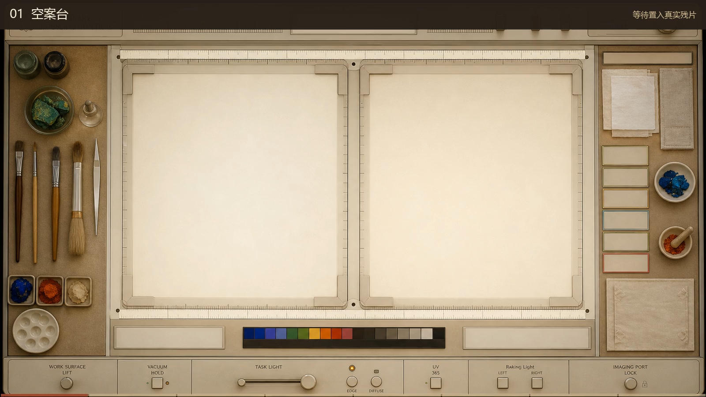

边缘匹配
优先判断撕裂边缘、形态与版式之间是否存在直接契合关系。
工作依据
优先判断撕裂边缘、形态与版式之间是否存在直接契合关系。
若边缘无法直接确认，则继续依据文字内容与文献关系寻找连接。
缀合工作台
保留原有的双残卷上传与缀合操作。上传后可分别观察两块残卷，再进行缀合分析。

LOCAL REJOIN · VERIFIED REPLAY
将正式前端的缀合回放与分析报告合并在同一张检视案台中。可以切换观察方式，但保存回放不代表本轮重新计算。
边缘形态和旋转校准形成稳定对应；文本内容只能作为辅助证据，不代替物理断边判断。